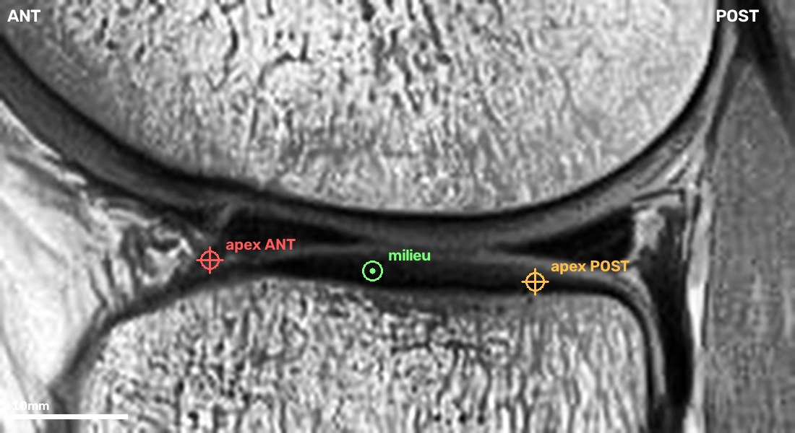
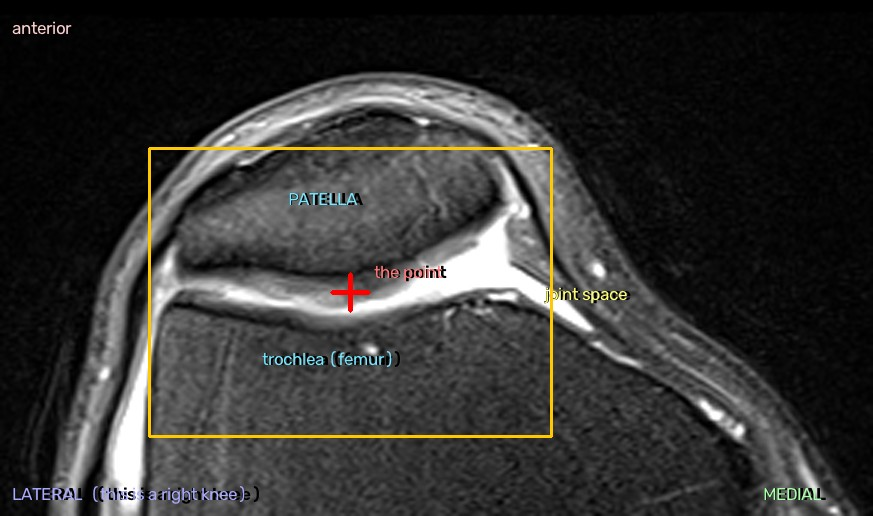

lat_centre — what the point means
One point per study: the centre of the lateral meniscus, on one
sagittal slice. Two people who each annotate sensibly but differently produce two
datasets, not one. H closes this.

Which end of the stack is lateral
The badge on the image says so, per study. It is not the same end on a left and a
right knee, and the bundle shows the acquisition unmirrored — so the badge is
the only thing to trust. Every study here carries the DICOM Laterality
tag, so it comes from the scanner's own record.
1. The slice — where the two triangles are clearest
Scroll from the lateral edge inward. The meniscus first appears as a continuous
dark band across the joint line — the bowtie, the plane cutting the
C-shaped body lengthwise. Keep going and it separates into two dark triangles
facing each other, the anterior and posterior horns.
Take a slice from that second range, where both triangles are present and well
formed. If several qualify, take the middle one. Not the bowtie slices; not so far
toward the notch that the horns have thinned to slivers.
2. The point — midway between the two apexes, on the joint line
Each triangle has an apex, the tip aimed at the centre of the joint. The point goes
halfway between the two apexes, vertically on the joint line: the dark
line between the femoral condyle above and the tibial plateau below.
It lands in the gap between the horns, on almost nothing. That is deliberate —
the two apexes are features every knee has, and their midpoint does not move when one
horn is damaged.
3. Click even when the meniscus is abnormal — especially then
A torn, macerated, extruded or post-operative meniscus still gets a point, placed
where the geometry says it goes, not where the surviving tissue is. If the posterior
horn is gone, use where its apex would be; the tibial plateau and the femoral condyle
are still there to tell you.
This is the rule that matters most. If the point drifts toward the damage on
positives, the ROI drifts too, and the crop starts encoding the label through its own
position — a signal that exists in the training set and nowhere else.
Quand le badge est absent
Certaines études n'ont ni tag Laterality ni géométrie exploitable, donc
pas de badge. Repère-toi alors à la tête du péroné : un second os, détaché du
tibia, en bas et en arrière, qui n'existe que du côté latéral. Sur la pile il
apparaît à une extrémité et jamais à l'autre.
Puis clique normalement — rien d'autre à saisir. Le ménisque latéral
est à ~25 mm du bord latéral du genou, donc le bout de la pile dont ton point est
le plus proche est le latéral. Vérifié sur les 161 premières annotations :
161 fois sur 161, et le clic le plus central était encore à 31 % du milieu.
Si tu ne trouves pas le péroné, passe l'étude (S) plutôt que de deviner.
When to skip
A red banner (side unresolved, or slice order unusable), or no findable joint line.
Skipping is cheap and honest: the model does not need all 170, it needs the ones it
gets to be right.
If you are unsure
Consistency beats correctness. Pick a reading and hold it for all 170. A
systematic 3 mm offset costs nothing — the ROI is 40 mm and absorbs
it. One that varies study to study is noise the model never fully averages away.
When two readings of this text are both defensible, that is a defect in the text.
Say so, and we fix the wording, not the clicks.
pf_centre — ce que le point veut dire
Un point par étude : le milieu de l'interligne
fémoro-patellaire, sur une coupe axiale. H ferme cette aide.

L'articulation
Rien à voir avec les compartiments tibio-fémoraux. La rotule est un os
pris dans le tendon quadricipital ; sa face postérieure est
cartilagineuse et elle glisse dans la trochlée, la gouttière
à l'avant du fémur. Une crête médiane partage cette face en
une facette latérale (en général la plus grande) et une
facette médiale.
L'orientation ne change jamais ici : mesuré sur 3342 séries
axiales PD FS, les colonnes vont vers la gauche du patient et les lignes vers
l'arrière — 3342 fois sur 3342. Donc l'antérieur est en
haut et la rotule est toujours en haut de l'image. C'est pour ça qu'il n'y
a pas de badge latéral sur ce bundle : le point est sur la ligne
médiane de l'articulation, rien ne s'inverse entre un genou droit et un
gauche.
1. La coupe — au milieu de la rotule
Scrolle depuis le bas : d'abord tibia et péroné, puis
l'articulation, puis la rotule apparaît en haut, s'élargit, et
disparaît quand tu passes au-dessus. Elle occupe dix à quinze coupes.
Prends-en une au milieu de cette plage, là où la rotule est la
plus large. Évite les coupes où elle vient d'apparaître ou va
disparaître : l'interligne y est un filet et le point bouge beaucoup pour
un petit coup de molette.
2. Le point — au milieu de l'interligne
Entre la rotule et le fémur il y a une ligne (claire en PD fat-sat, c'est le
cartilage et le liquide). Le point va dans cette ligne, à
mi-chemin entre le bord latéral et le bord médial de la
rotule — donc en face de la crête médiane, entre les deux
facettes.
Centré sur l'interligne et pas sur l'os : ça met la rotule devant
le point et la trochlée derrière, et une seule boîte tient les
deux surfaces que l'arthrose attaque. Un point au milieu de la rotule pousserait la
trochlée hors du cadre, et l'inverse pour un point dans la gouttière.
3. Clique aussi quand c'est pathologique — surtout alors
Cartilage pincé, ostéophytes, rotule basculée ou
subluxée : le point se place quand même, là où la
géométrie le dit, pas là où se trouve la lésion.
Si l'interligne est complètement pincé d'un côté, vise
toujours le milieu de la largeur rotulienne.
C'est la règle qui compte le plus. Si le point dérive vers la
lésion sur les positifs, le ROI dérive avec lui et le crop se met
à encoder le label par sa seule position — un signal qui existe dans le
jeu d'entraînement et nulle part ailleurs.
Ce qui ferait un clic faux
- dans la rotule au lieu de l'interligne derrière elle ;
- sur le tendon ou le paquet graisseux à l'avant, qui prennent la
place de la rotule sur les coupes situées en dessous d'elle ;
- sur une coupe sous la rotule : on y voit les condyles et
l'échancrure, qui appartiennent aux autres compartiments ;
- dériver vers une facette. Le point est entre les deux.
Quand passer son tour
Pas de rotule identifiable sur la pile, ou ordre des coupes inutilisable (bannière
rouge) : S. Passer est honnête et pas cher.
Si tu hésites
La constance vaut mieux que la justesse. Choisis une lecture et tiens-la sur
les 300. Un décalage systématique de 3 mm ne coûte rien, la
boîte l'absorbe. Un décalage qui change d'une étude à
l'autre est du bruit que le modèle ne moyenne jamais complètement.
Si deux lectures de ce texte sont défendables, c'est le texte qui a un
défaut. Dis-le, on corrige les mots, pas les clics.